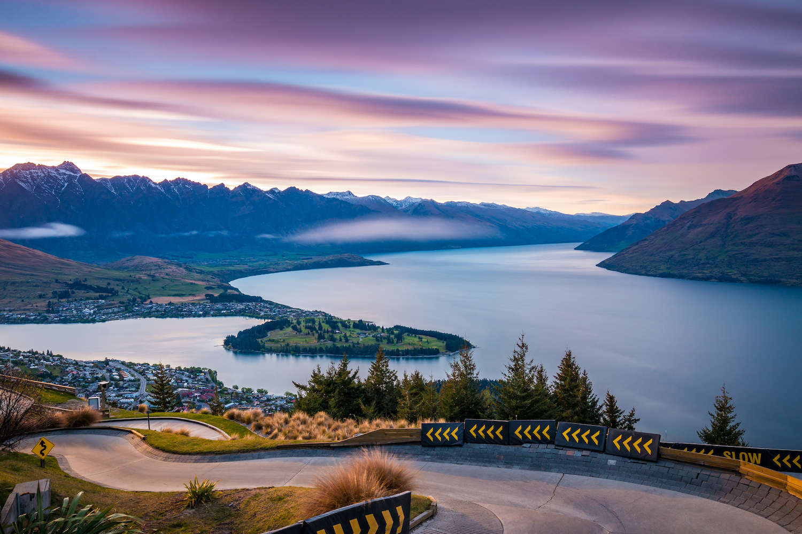
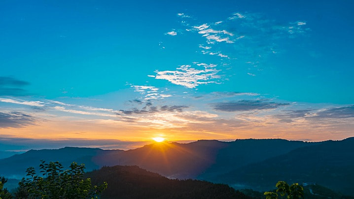

July 1, 2022
Into the Wild: Exploring Untamed Landscapes
This blog delves into the thrilling adventures of exploring untouched and remote natural landscapes. From the dense rainforests of the Amazon to the vast savannas of Africa, readers will be taken on a virtual journey through captivating narratives, stunning photography, and valuable insights into the diverse flora and fauna that inhabit these extraordinary regions.

August 15, 2022
Nature's Healing Touch: Finding Solace in the Outdoors
This blog focuses on the therapeutic benefits of immersing oneself in nature. It explores how spending time in natural settings can reduce stress, improve mental well-being, and foster a deeper connection with oneself and the world around. From forest bathing to mindfulness practices, readers will discover various techniques to enhance their relationship with nature and harness its healing powers.

September 30, 2022
Conservation Chronicles: Stories of Preserving Earth's Natural Wonders
This blog sheds light on the importance of environmental conservation and showcases inspiring stories of individuals, organizations, and communities working tirelessly to protect and restore our planet's fragile ecosystems. Through interviews, case studies, and success stories, readers will gain insights into various conservation efforts, sustainable practices, and ways to get involved in safeguarding the natural world for future generations.